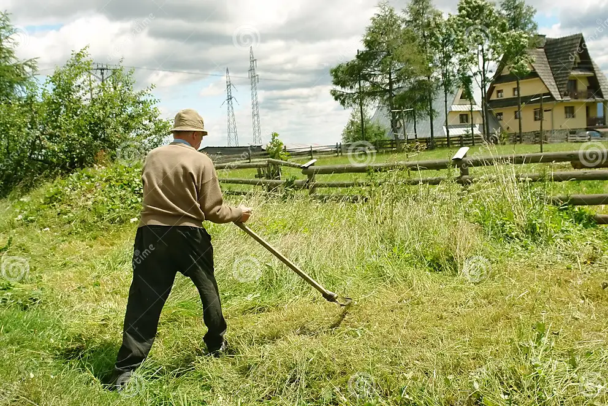

Tool Care and Storage
- Rake: Store your rake in a dry place to prevent rust. Hang it on a wall or store it in a garden shed to keep it organized and out of the way.
- Wheelbarrow: Store the wheelbarrow in a dry place with the wheel off the ground to prevent flat spots. Keep it covered or under a shelter to protect it from the elements.

- Scythe: Clean the blade after use to prevent rust and store it in a cool, dry place. Store the scythe blade side down to protect the blade and prevent accidents.
- Compost Bin: Place the compost bin in a well-ventilated area, preferably on soil to allow for drainage. Keep it covered to retain moisture and deter pests.
- Shovel: Store shovels in a dry area, hanging or standing upright to prevent warping or damage to the blade. Lubricate the metal parts to prevent rust.
- Spade: Store spades in a dry place, hanging or standing upright. Clean and oil the blade to prevent rust and maintain sharpness.
- Hay Fork:Clean the hay fork after use to remove debris and prevent rust. Store it in a dry area, hanging or lying flat, to maintain its condition.
Want to get involved?
To get involved in manual agriculture in your area, connect with local farming communities, attend workshops, join community gardens or conservation groups, and seek mentorship from experienced farmers to learn traditional techniques and contribute to sustainable food production.
About Manual Agriculture...